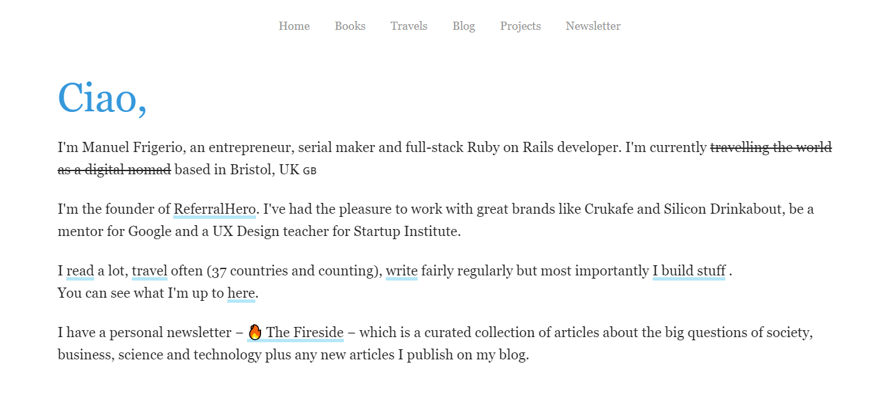

I was reading random blogs on the internet, clicking on links as they came through without real purpose, when I landed on Manuel Frigerio's blog. I really like his website. Here's why. Table of contents A tour of Manuel's blog Takeaways A tour of Manuel's blog Hmm, I like the design. White, simple. Let's have a look around.  The website has a simple home page with a short introduction. I read that Manuel builds stuff. Sounds interesting. Here they are. A selection of professional-looking projects. The list is easy to read. Short description, but enough to understand what it's about. Minimalist. A link for each project. That's immediately inspiring to me. I want to focus on building complete projects with some kind of "frontend" that others can use. Maybe even start some professional projects with a payment service. And then make a simple listing like that. Let the work speak for itself. Okay let's see what other treasures Manuel has on his website. A blog section. Of course. It's called "Entitled Opinions". I like the title it makes me immediately understand that I enter the personal zone of "In here, I say whatever the fuck I want". The blog has some tutorials and a few entitled opinions. There's also a yearly review for 2018 (but well, it's 2020 now, wake up Manuel!). I often come across bloggers that publish yearly reviews. Some are interesting to read (like James Clear's, of course). But I don't know, I don't think I'll take part and write one. Somehow it feels like sharing too much of myself. But it'd be nice to start writing private ones, as a good journaling habit. Well, what's next? There's a "Travels" section with a list of destinations. Likewise, I wouldn't feel comfortable sharing this kind of information with the world. Impressive list, though. Ah! And the "Books" section. Let's see the reviews. Oh wait, no. No reviews. Just links. To Amazon, ahah. Probably affiliate links then. Well whatever, the list is HUGE 😮. I should definitely read more. Takeaways Manuel's list of projects makes me wanna up my game. I want to do more quality stuffs. Drop the small projects, start big ones that I can be proud of. Take risks, try and make money with something. Most of the listed projects look simple. He had the idea, he took the time and he put them out there. It's a good reminder that I don't need to be a perfectionist, but I need to go out of my comfort-zone, build products rather than scripts. The long list of books he read (I assume) makes me want to learn more. But learn from quality sources. Like books that someone has spent months or years to write. Not from half-assed articles on medium that a noob wrote after finishing his first project using X. It reminds me of one of Luke Smith videos, where Luke says he doesn't watch YouTube, even though he's a YouTuber. And well, now that I think about it, maybe I should even stop writing tutorial articles, focus on what's unique to me (e.g. my thoughts) and not clutter the web with even more noob-quality tutorials. The simplicity of Manuel's blog is a welcome reminder to cut the minutiae. Everything that matters is there: the about page, the blog, the readings, the projects and the newsletter. Everything is immediately obvious and easy to find. No clutter. What I like the most, I think, is that you can clearly see the four areas where Manuel invests his time: Travels, Books, Projects and Writing. The way they are presented on his website, one link in the top-level menu each, makes me feel like they are all equally important. I wouldn't be surprised if this helped Manuel avoid distractions and focus on investing his time in improving one of those four areas.
Other articles you might like: Keyboard shortcut and command line utility to switch display (Windows) Using WSL-2 as a dev environment Linear regressions in simple terms